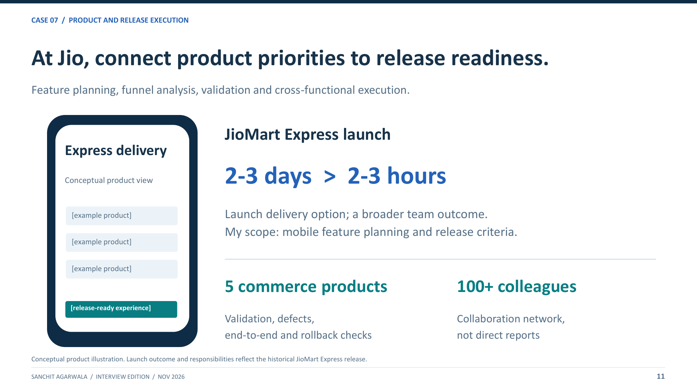
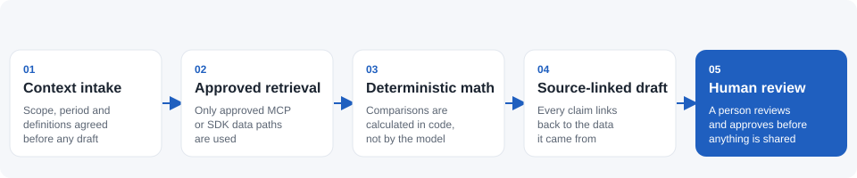

I start with the decision
Before I build anything, I ask two questions: what decision will this number help someone make, and who will act on that decision?
Technical Program Manager
I work at the intersection of technical program management, data platforms and software engineering: defining the metrics that matter, aligning the teams that own the data, and building reliable reporting and AI workflows that leadership can act on.
What should we measure, and which decision will it support?
What does the number mean, and who owns it?
Can people trust the result, and what happens when it's wrong?

At Microsoft, I own what gets measured for Azure cloud reliability, align partner teams on shared definitions, and build the data platforms and web applications people use to make decisions. Previously at Jio Platforms, I led mobile feature planning and release validation for consumer commerce apps serving millions of shoppers.
My core depth is across Azure data platforms, reliability reporting, and cross-org program execution, alongside hands-on engineering in Python, React, C#, SQL, and KQL. I also build evidence-grounded AI workflows that run deterministic arithmetic in code and keep human review in the loop before anything reaches leadership.
If you bring me a reporting problem, a cross-team program or a data question, this is how I'll approach it.
Before I build anything, I ask two questions: what decision will this number help someone make, and who will act on that decision?
When stakeholders need different things, I put their requirements side by side and design for all of them, so conflicts surface early instead of becoming rework later.
I test a small version with real users before scaling it up, and I say clearly what isn't ready yet.
Every dashboard, pipeline and definition gets an owner, documentation and monitoring, so it doesn't depend on me.
Filter by the kind of role you're hiring for. Figures come from my own records and internal reviews.
Note: Visuals are sanitized architectural reconstructions using placeholder data to protect confidential employer details.



I author reusable Copilot skills: structured, reviewable workflows that gather context, use approved tools and data, do the arithmetic in code and leave the final call to a person.
I designed a reliability check-in skill for monthly reviews. It gathers context first, retrieves data through approved connection paths (MCP and SDK, the standard ways for AI tools to reach data), calculates metric comparisons in code, and drafts a narrative where every claim links to its source. A reviewer approves each draft before use.

I developed workflows with environment-aware, scoped evidence retrieval and bounded Python collectors for investigations.
I introduced Copilot-assisted workflows for code review, data analysis and document drafting, cutting manual preparation in recurring work. Owners check the output before they use it. I also explored Copilot Studio for agent use cases.
How I design these: the agent proposes and a person decides. Numbers come from code, not generated text, every claim has a source, and nothing goes out unreviewed.
Azure cloud reliability intelligence. I own the executive reliability scorecard, its pipelines and its access model.
Cross-org reporting strategy and delivery for Azure reliability, including the planning-tool consolidation and cross-team incident coordination.
Program management office reporting: Power BI models and dashboards for quarterly executive reviews, data freshness and security requirements.
Defined success metrics and a Power BI dashboard for a mission-critical customer-resiliency program. Received a full-time return offer.
Requirements and decision logs for a service-management application, and a phone migration across 20+ university units.
Owned mobile feature planning and release criteria for the JioMart Express launch, which gave shoppers a 2–3 hour grocery delivery option instead of 2–3 days. Assistant Manager (Jan–Dec 2021): led validation for five commerce products, coordinating defect reviews, end-to-end testing and rollback checks across a network of more than 100 colleagues.
Designed 50+ data models for SCADA and PLCC operational data, and SQL queries to find anomalies in industrial monitoring datasets.
Business intelligence and analytics; information assurance. Graduate teaching assistant for data communications and strategic communication.
Member of the Microsoft Aspire Leadership Council (2024–2026), where I plan and host sessions for early-career talent, mentor interns and new hires, and help interns move into full-time roles.
Rotaract Club of Mumbai (Jul 2017 – May 2021): Vice President in 2019–20, leading a team of 15 and mentoring 10 directors. Earlier, I served as Director of Community Services and Director of Professional Development (2018–19). I helped run Talent Fiesta and Challenging Challenges, disability inclusion programs, and X-pressions, which reached 4,000+ children.
My published research, plus earlier academic work on request.
Designed a smart locker with multi-factor authentication (FPGA and RFID) and IoT alerts. Published the research on SSRN (Elsevier): computer vision and a Raspberry Pi flag unauthorized users within 14 seconds and send image alerts for remote approval or denial.
Led a 10-month consulting engagement for Rotary: a plan for clubs to partner with local businesses, built on stakeholder interviews with club presidents and business leaders.
Engineered features from 900+ unstructured restaurant reviews, built neural network and KNN models to forecast churn, and visualized seasonal retention trends in R.
Gathered requirements and designed a relational system for a football association's research and performance data, then built a full-stack .NET and Oracle application for retrieval and reporting.
Analyzed NYC 311 service data in Excel and Tableau, and proposed a redesigned 311 architecture for Tucson, including non-emergency call types that could move off the 911 line.
Analyzed voice, SMS and internet usage across large telecom datasets, clustered customers for tailored retention offers, and predicted churn for high-value customers.
Designed the data architecture for a company database, from E-R diagrams to a normalized relational schema, with SQL queries that also support NoSQL-style data.
Each card flips to show its validation link.
The fastest way to reach me is LinkedIn. I'm happy to talk about technical program management, reliability reporting, data platforms or applied AI.